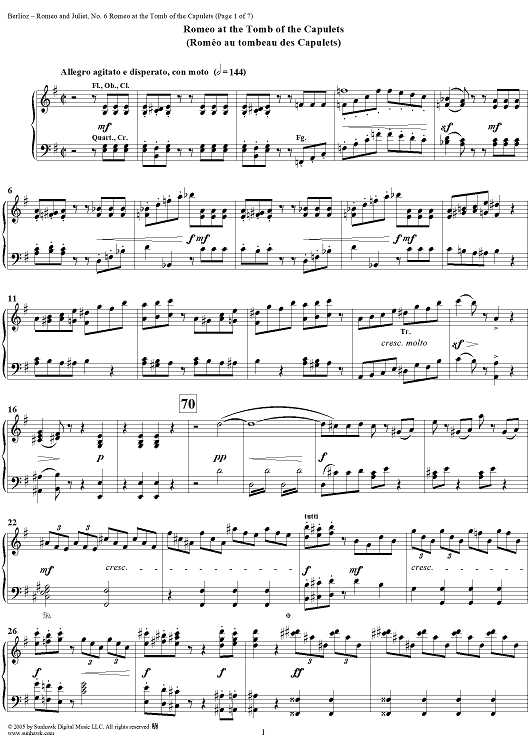

Thông tin tác phẩm
- Nhà soạn nhạc Charles Gounod
- Công diễn 1867
- Thể loại Opera
- Ngôn ngữ Tiếng Pháp
- Chuyển thể từ Romeo and Juliet — Shakespeare

“Một bản tình ca bi kịch,
nơi tình yêu đẹp nhất cũng dẫn đến cái chết.”
“Ah! lève-toi, soleil!
Fais pâlir les étoiles...”
Đó là một trong những đoạn aria nổi tiếng nhất
của opera “Roméo et Juliette”,
nơi Romeo đứng dưới ban công
và cất tiếng hát về Juliet
như ánh mặt trời duy nhất trong cuộc đời mình.
Charles Gounod đã chuyển hóa
câu chuyện tình bi kịch của Shakespeare
thành một thế giới âm nhạc đầy cảm xúc,
nơi mọi rung động của tình yêu,
nỗi sợ hãi và tuyệt vọng
đều được đẩy lên mãnh liệt
qua giọng hát và dàn nhạc.
Opera không chỉ kể lại
câu chuyện quen thuộc của Romeo và Juliet,
mà còn làm nổi bật
sự đối lập giữa tình yêu thuần khiết
và hận thù giữa hai dòng họ.
Những màn song ca giữa hai nhân vật chính
mang vẻ đẹp vừa lãng mạn,
vừa mong manh,
như thể người nghe đã biết trước
bi kịch không thể tránh khỏi.
“Roméo et Juliette”
đến nay vẫn được xem là
một trong những vở opera tình yêu
nổi tiếng và cảm động nhất
của âm nhạc cổ điển châu Âu.